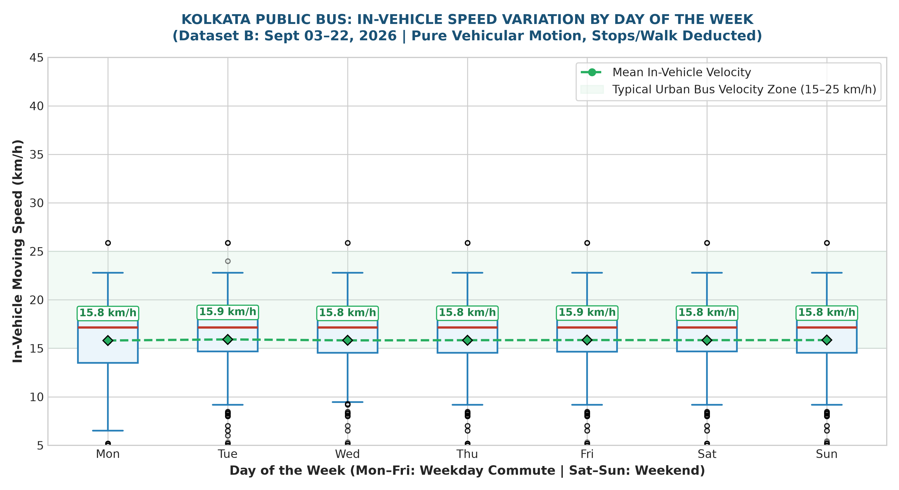
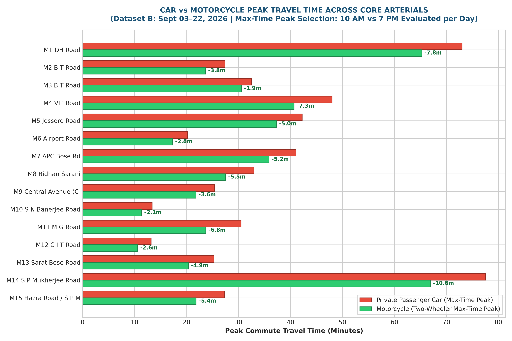
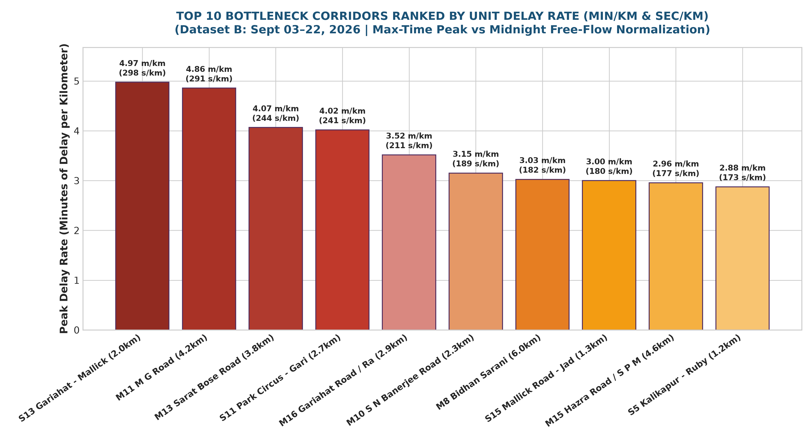
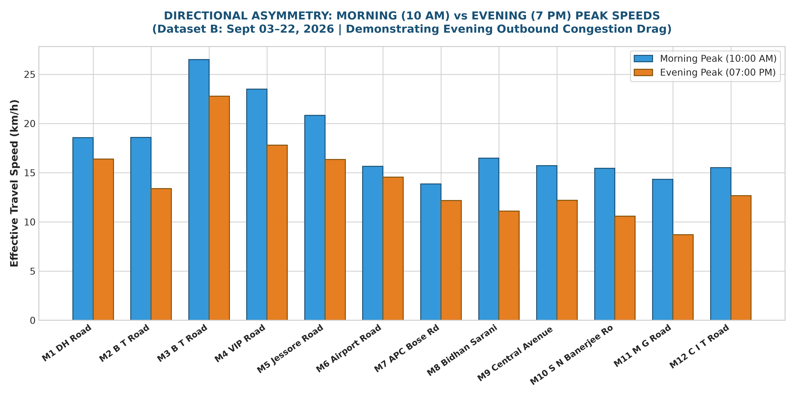
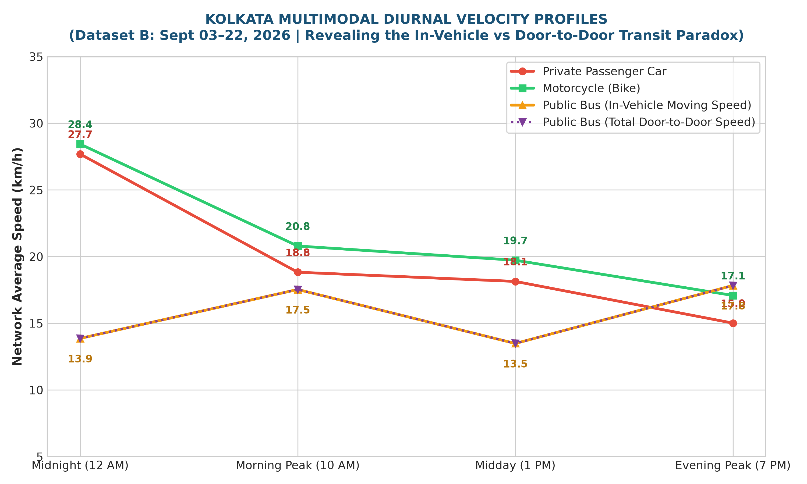

Dataset B: 20-Day Robust Analytical Benchmark (September 03–22, 2026) | 40 Corridors · Individual Worst-Peak Selection (10 AM vs 7 PM) · Normalized Centerline

Demonstrates weekend speed recovery and weekday commuter drag across Monday–Sunday.

Quantifies two-wheeler queue filtration advantage across core arterial corridors using max-time peak selection.

Normalized unit delay (min/km & sec/km) eliminates length bias, pinpointing acute arterial friction on MG Road, Gariahat, and Sarat Bose Rd.

Shows outbound evening commercial dispersal causing speed drop over morning commute.

Reveals the Public Transit Paradox: in-vehicle bus speed vs door-to-door transit friction.